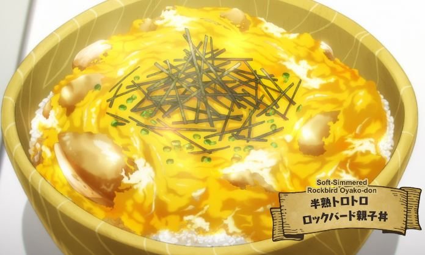

Rockbird Oyakodon

Not quite parent ("oya") and child ("ko"), but fenrirs and slimes don't sweat the details
A Rockbird is an elephantine monster that might make you think of a rooster slowly but surely
taking evolutionary steps back to becoming a T-rex. Unsurprisingly, this otherworld bird is an
ornery foe that even intermediate adventurer parties only have a chance of winning against.
All that said, to Fel the fenrir, a Rockbird may as well be another chicken on the chopping block.
Needless to say, Rockbird poultry is a delicacy. For an exhausted Mukohda, all that's left is to
buy some eggs from Earth's grocery, and some hearty recovery food won't take long!
Ingredients
- 340 grams Rockbird thigh or breast meat
- 170 grams white onion
- 1 cup dashi
- 2 tbsps mirin
- 1 tbsp soy sauce, plus more to taste
- 1 tbsp sugar, plus more to taste
- 2 large eggs
- Freshly cooked rice
Cooking Directions
- Thinly slice the onion, and cut the Rockbird meat into bite-sized pieces.
- Crack open eggs into a bowl and lightly whisk.
- In a deep enough pan, mix together the dashi, mirin, soy sauce, and sugar. Bring
to a strong simmer under high heat.
- Add in the Rockbird and onions to cook through, taking around 5 to 7 minutes for thigh meat
or 3 to 4 for breast meat. During the cooking process, make sure all of the meat pieces are
sufficiently submerged in the broth and then cover with a lid.
- Turn down to low heat and pour in half of the whisked eggs. Cover once more with a lid
and allow to further cook for around 2 to 3 minutes.
- Take off from heat and pour in the remaining whisked eggs. Cover once more with a lid
and allow it to cook in residual heat for another 2 to 3 minutes.
- Plate on top of a bowl of freshly cooked rice and enjoy!
Back Home